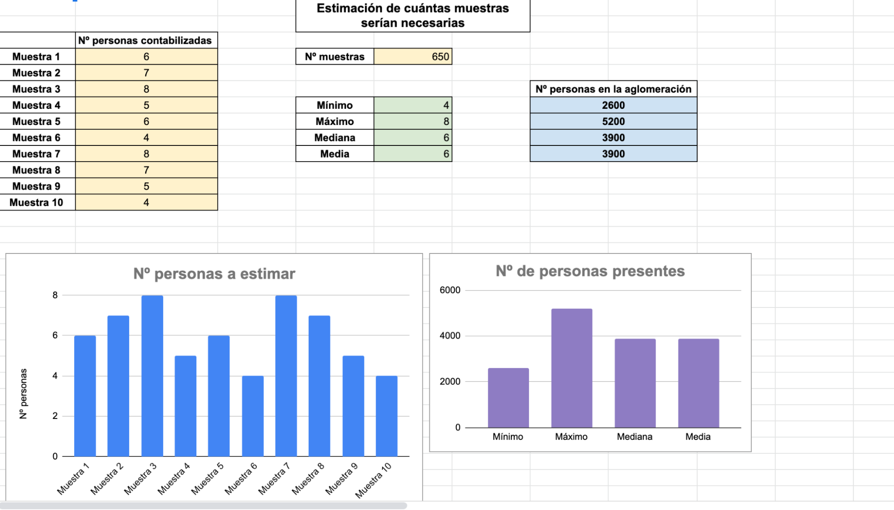

Actividad 4: Estimar las personas que caben en la superficie anterior
Una vez obtenidos los datos de las actividades anteriores, realizamos una estimación de las personas (suponiendo que hemos hecho el ejemplo de antes) que hay en la zona delimitada.

Pregunta 1
¿Las estimaciones respecto de los parámetros, difieren mucho?
Pregunta 2
¿Cuál crees que es la mejor aproximación? ¿Por qué?
Pregunta 3
Si buscas en la prensa compara tus resultados y deduce cómo lo han hecho ellos